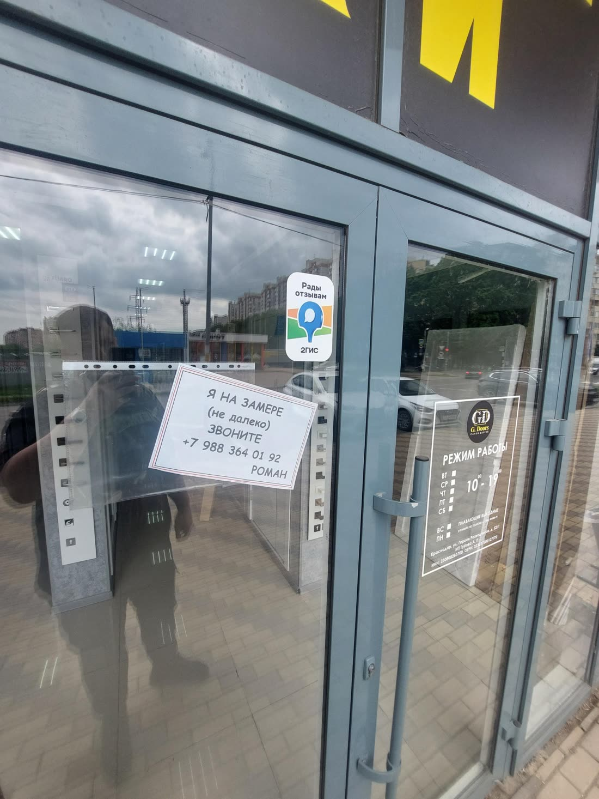

| 2ГИС | Яндекс Карты | |
|---|---|---|
| Рейтинг | 5,0 · 46 оценок | 4,6 · 44 оценки |
| Карточка подтверждена | Плашка «давно не обновляла данные» | Нет, «Вы владелец этой организации?» |
| Часы работы | Ежедневно 10–19, «по предварительному звонку» | Ежедневно 10–19 |
| Цены | Нет | Нет |
| Ответы на отзывы | 4 из 38, все в июне 2022 | 0 из 29 |
| Связь | Телефон, WhatsApp | Телефон |
| Сайт | Нет | Нет |
Что нашёл
Карточка в Яндекс Картах никому не принадлежит важно
На карточке висит «Вы владелец этой организации?». Пока она не подтверждена, нельзя отвечать на отзывы, менять часы, добавлять цены и фото. А в блоке «Похожие места» прямо под вами Яндекс показывает «Дверновъ» (5,0, 33 оценки) с акцией «Покажи цену конкурента, и мы снизим стоимость» и Kuban-Doors со «Скидкой 13% на все межкомнатные двери».
В Яндексе 4,6 вместо пяти, и одна оценка явно случайная важно
Из 29 отзывов в Яндексе 28 на пять звёзд. Один отзыв с текстом «Отличный магазин. Продавец Роман профессионально всё рассказывает… Рекомендую» стоит с оценкой 1 из 5 (Сергей К., март 2024). Похоже, человек промахнулся. Ещё 15 оценок оставлены без текста. Рядом в выдаче «Дверновъ» с 5,0, и сравнение идёт не в вашу пользу.
2ГИС пишет каждому: «Компания давно не обновляла данные» важно
Эту строку видит каждый, кто открывает карточку, а в разделе «Актуальность данных» стоит «не подтверждена». Человек выбирает, кому доверить двери на всю квартиру, и видит, что салон за карточкой не следит.
Часы на двери и в карточках разные важно
На фото таблички у входа (из карточки 2ГИС): вторник–суббота 10–19, воскресенье и понедельник «плавающие выходные». В 2ГИС «ежедневно с 10 до 19, по предварительному звонку», в Яндексе просто «ежедневно 10–19», без оговорок. На одном из фото на двери ещё и записка «Я на замере (не далеко), звоните» с другим номером, которого нет ни в одной карточке. Кто приедет в понедельник по Яндексу, может упереться в закрытую дверь.

Последний ответ на отзыв был в июне 2022 года заметно
В 2ГИС 38 отзывов, ответов от салона 4, и все написаны в июне 2022. После этого 34 отзыва остались без ответа, в том числе свежие: сентябрь и октябрь 2026. Люди пишут «Роман профессионал своего дела», «в новой квартире устанавливали аж 6 дверей». Ответы видят будущие покупатели, и карты выше показывают тех, кто отвечает.
Нет цен, и вопросы о них за вас отвечает робот заметно
Вкладка «Цены» в 2ГИС пустая, в Яндексе цен тоже нет. В «Вопросах о месте» висят «Сколько стоят двери?», «Есть ли двери в наличии?», «Делаете демонтаж старых дверей?», «Есть ли рассрочка?», и на них отвечает ИИ-помощник 2ГИС, а не вы. При этом в отзыве прямо пишут, что выбрали вас, потому что «цены видно на ценниках».
На вашей карточке в 2ГИС рекламируются другие салоны дверей заметно
В блоке «Похожие организации» под вашим адресом: «Двери Эстетика входа» с кнопкой «Перейти на сайт» и пометкой «Реклама», «Дверной эксперт: белорусские двери от 7800р» с кнопкой «Рассчитать стоимость», «Крд-монтаж» с «Узнать стоимость». У них есть цены и кнопки, у вас нет даже сайта.
Про установку пишут постоянно, а в рубриках её нет просто
В 2ГИС рубрики: межкомнатные двери, входные, комплектующие, напольные покрытия, натяжные потолки. Рубрики «Установка дверей» нет, хотя во многих отзывах речь именно о монтаже: «доставили и установили», «быстро привезли и качественно поставили». В контактах только телефон и WhatsApp, а на вывеске ещё кварцвинил, SPC и плинтус.

Что предлагаю
Беру на себя всё из списка, от вас нужно только подтвердить карточки кодом из СМС.
- Подтвердить карточки в 2ГИС и Яндексе, выставить одни часы, рубрики и цены «от»
- Ответить на все отзывы и дальше отвечать на новые, разобраться с оценкой 1 из 5
- Поставить первыми лучшие фото: фасад, зал, установленные двери
- Сайт салона со ссылкой из обеих карточек: вот концепт
- Раз в месяц отчёт: сколько людей посмотрели карточку, позвонили и построили маршрут
Разбор бесплатный. Стоимость работ обсудим, она небольшая.